Strategic Interface
戰略界面
河套以「一河兩岸、一區兩園」連接深圳產業轉化能力與香港國際科研資源，形成大灣區創新協作的關鍵平台。
Concept Bid Presentation / Architectural Facade Lighting
Lighting Concept for the New Passenger Inspection Building,
Hetao Shenzhen-Hong Kong Innovation Zone
Project Background / 項目背景
Hetao is not defined by separation. It is a platform of connection, research exchange, industrial translation and cross-border collaboration.
河套以「一河兩岸、一區兩園」連接深圳產業轉化能力與香港國際科研資源，形成大灣區創新協作的關鍵平台。
新旅檢大樓是科研人員、企業訪客及園區運營流線進入合作區的第一夜間界面。
照明需同時建立城市識別、入口辨識、通關秩序與旅客導向，克制但不可過暗。
Design Concept / 設計概念
Light of Order, Gateway of Collaboration
河套的核心價值不在「邊界」，而在「連接」：連接深圳與香港，連接內地創新製造體系與香港國際科研資源。
夜間照明不作炫目地標，而作清晰、高效、可信賴的科技園門戶。
以 克制、精確、低眩光、重層次 的外立面光環境，支撐高人流旅檢建築的入口識別、流線引導與穩定運營。
Scheme 01 / 主推方案
底部連續線性上照與豎向光序


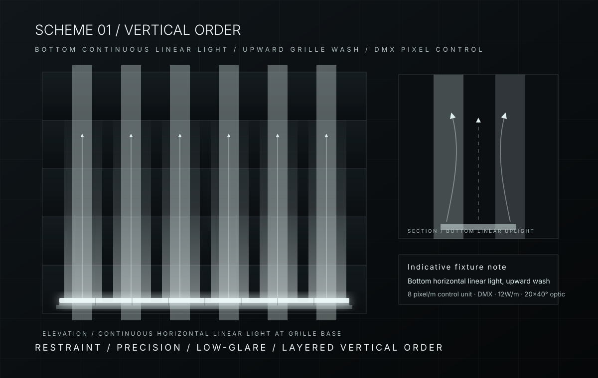
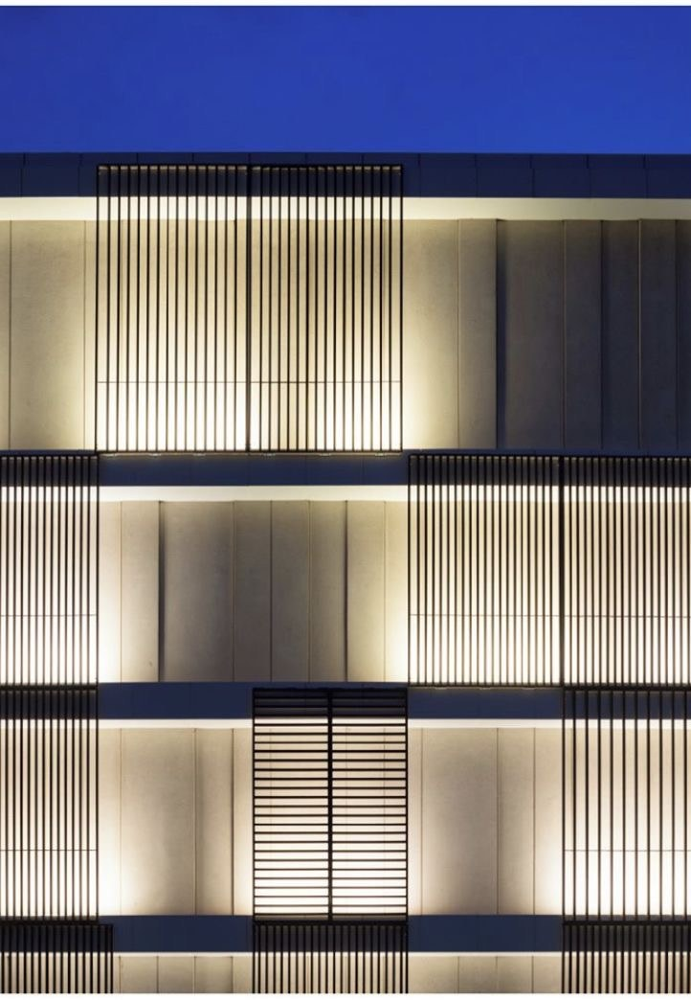
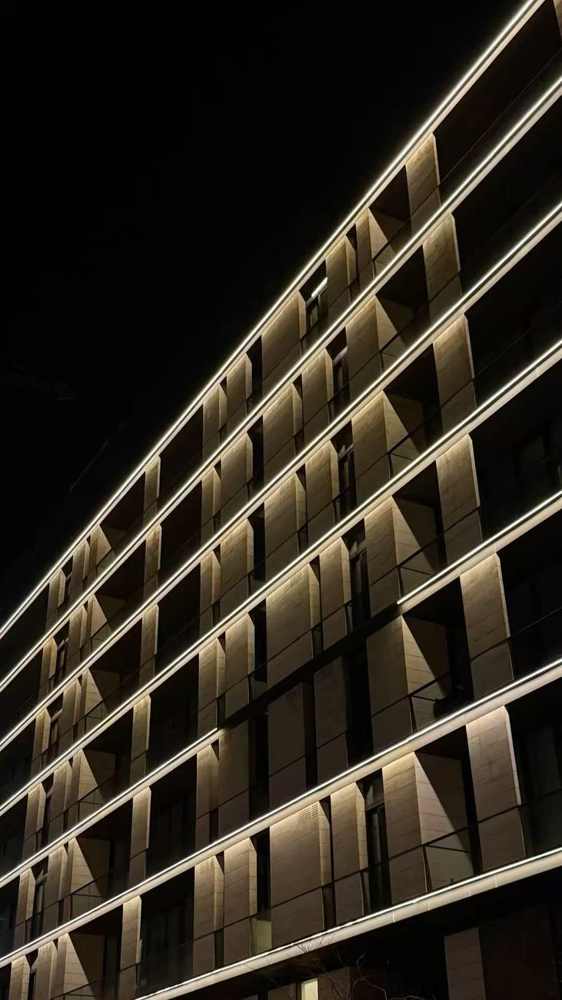
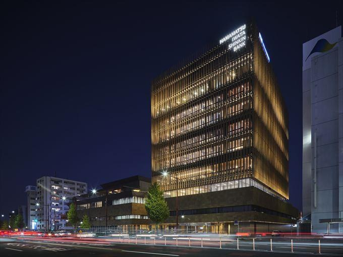
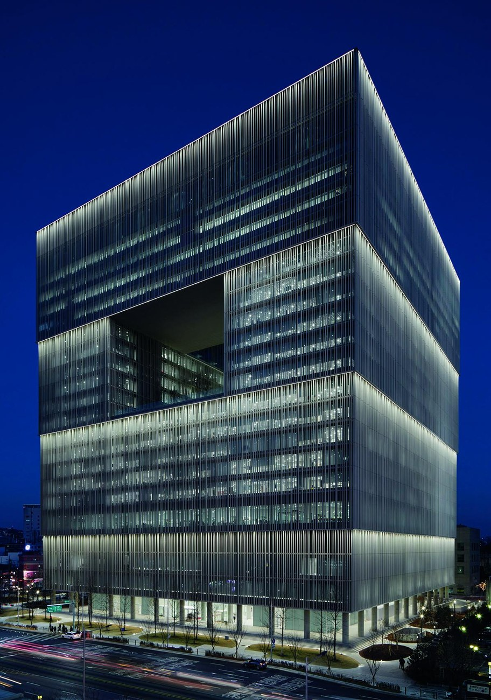
重點是「底部橫向連續線性上照」與「DMX 分段控制」，不是點狀燈或外露輪廓線。
Scheme 02 / 備選方案
格柵間點式下照
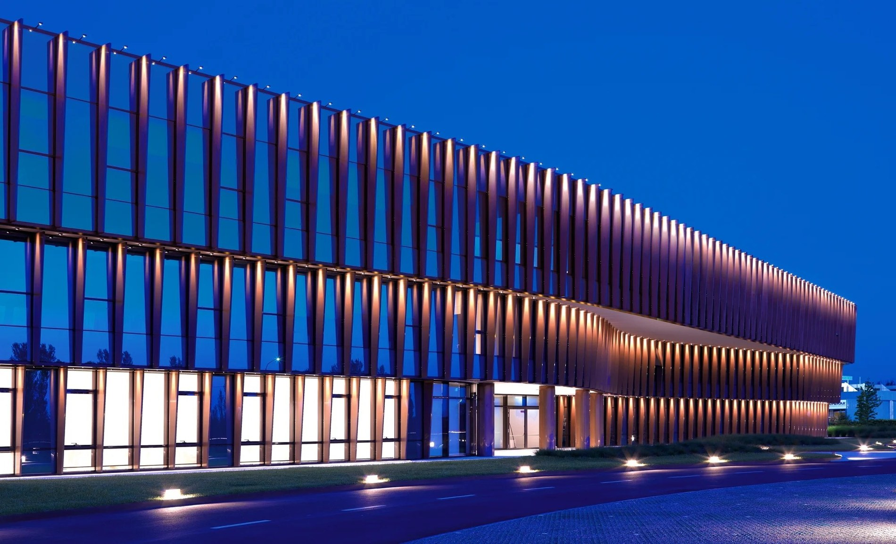
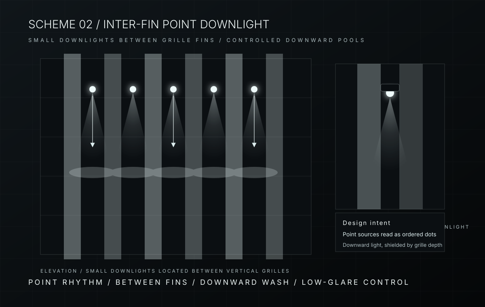
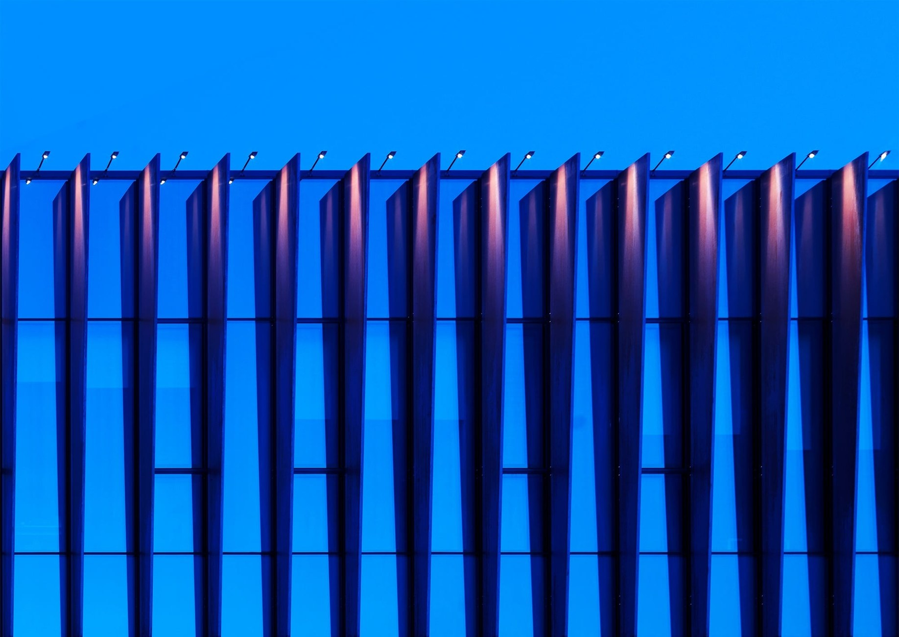
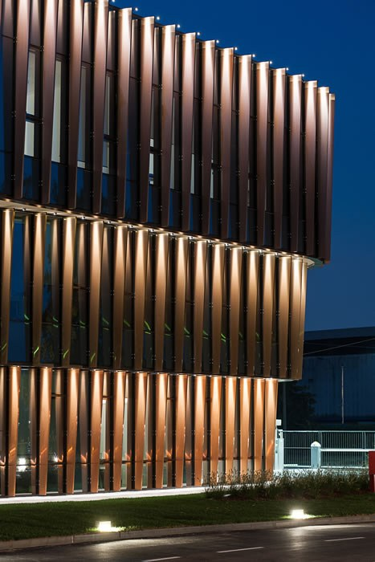
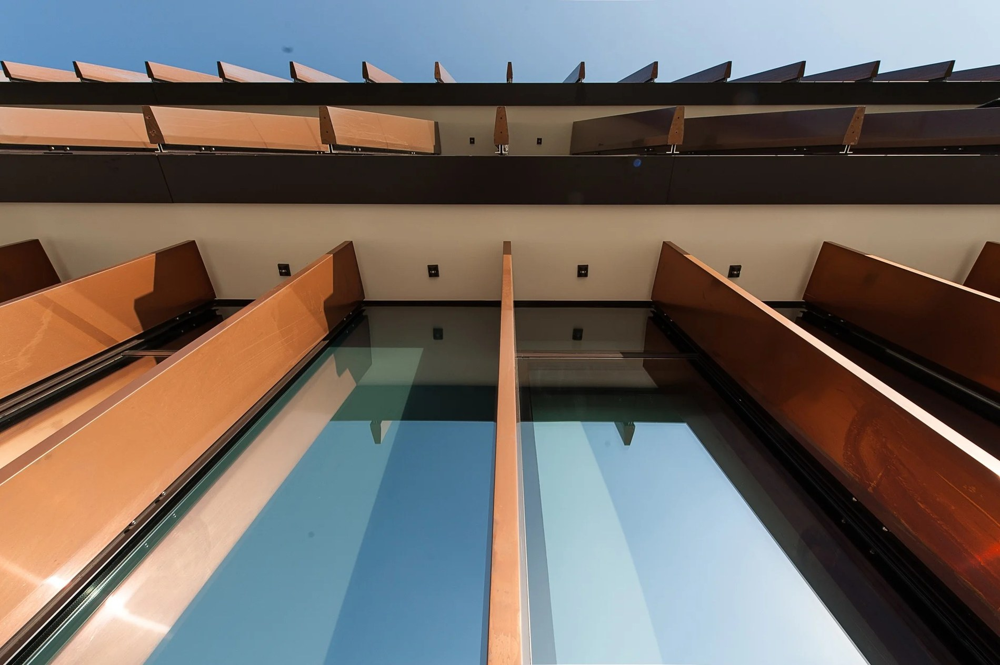
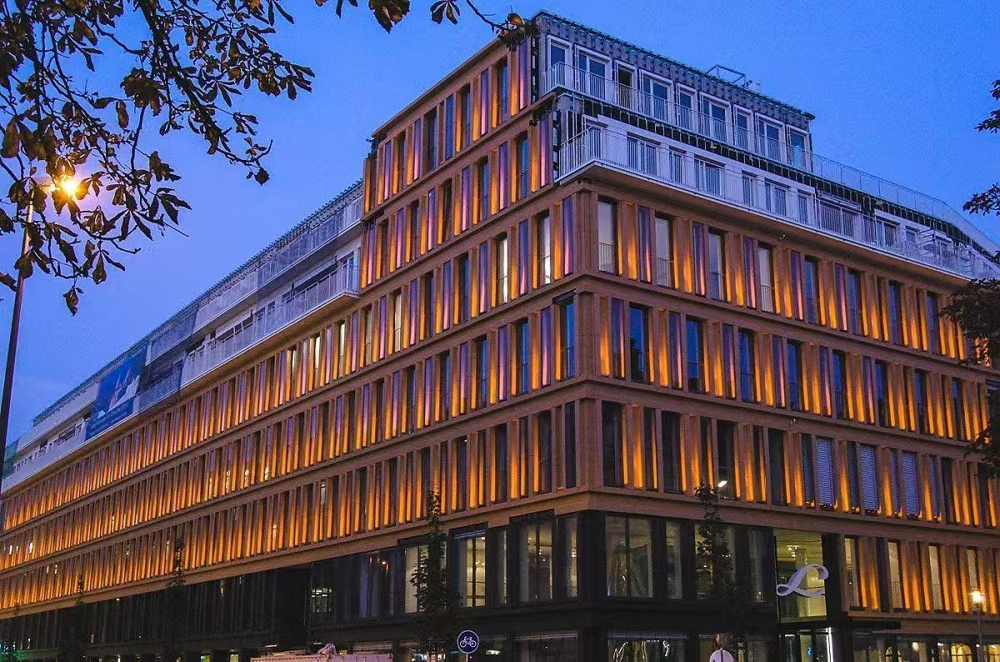
重點是「點狀下照」：燈位在格柵間，光往下落，不做連續線性上照。
Scheme 03 / 備選方案
內透光與門戶框架
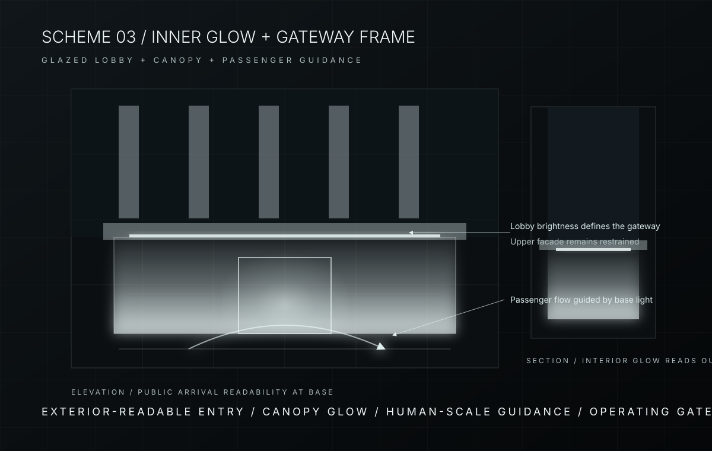
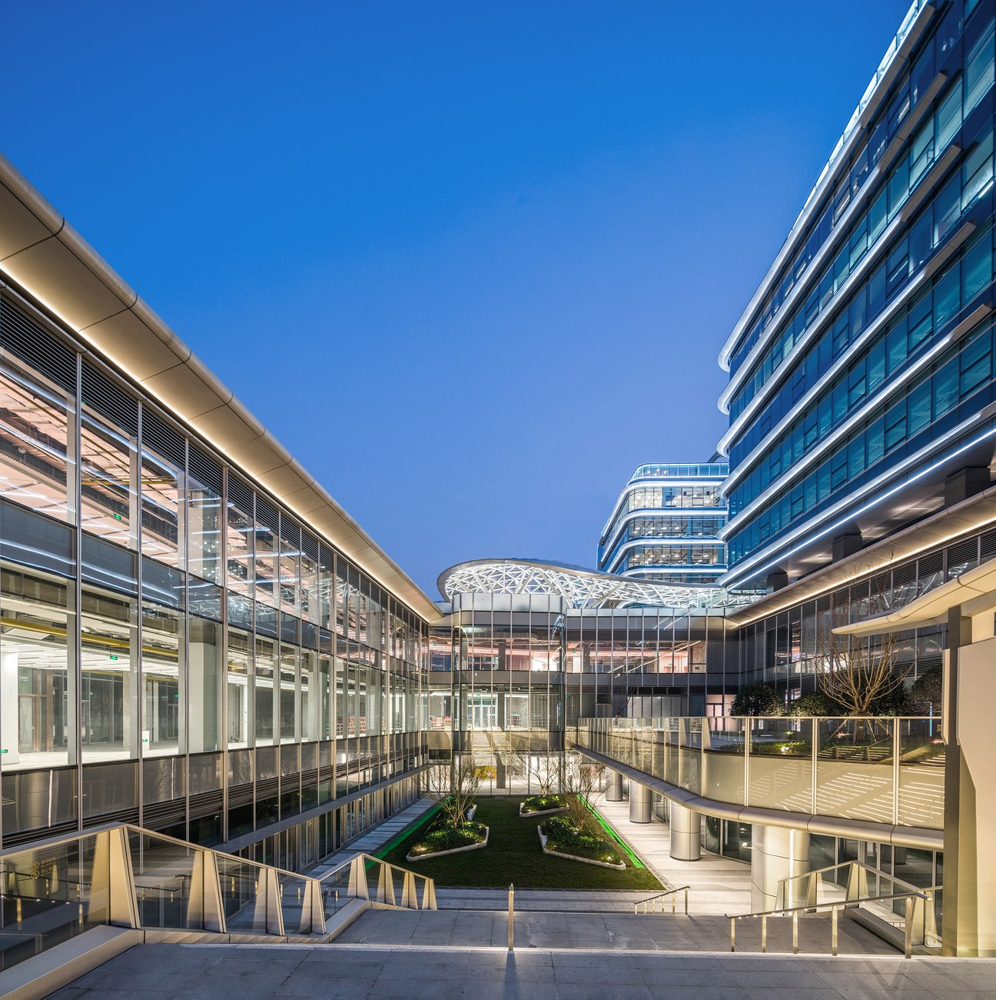
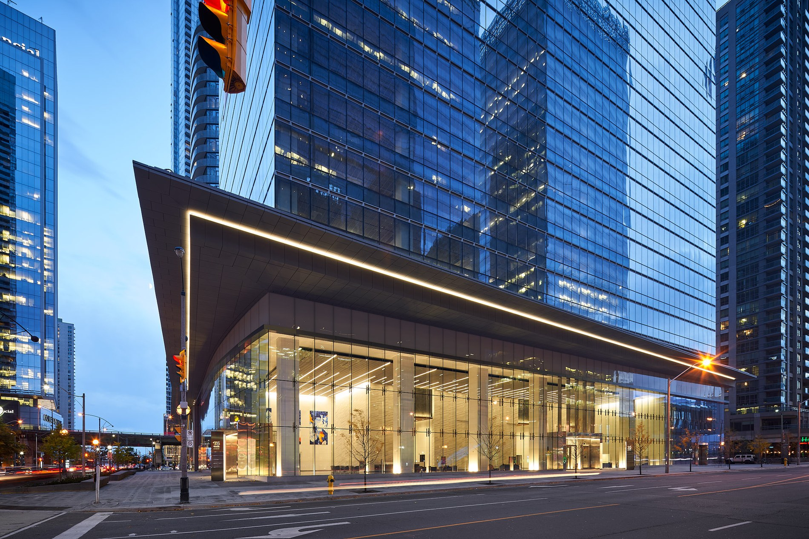
重點在城市外部可見的入口亮度、門廊框架與人流導向，而非上部立面表演。
Scheme Relationship / 方案關係
Scheme 01 remains the clearest facade identity. Scheme 02 provides a quieter point-source rhythm. Scheme 03 focuses on gateway operation and arrival.
主推方案 / Recommended
備選方案 / Alternative
備選方案 / Alternative
Reference Sources / 參考來源
以下來源僅作外立面照明手法參考，不代表本項目成果。參考圖已下載至本地頁面。
hetao_lighting_refs/scheme01_vertical_orderhetao_lighting_refs/scheme02_horizontal_layerhetao_lighting_refs/scheme03_inner_glow_gateway